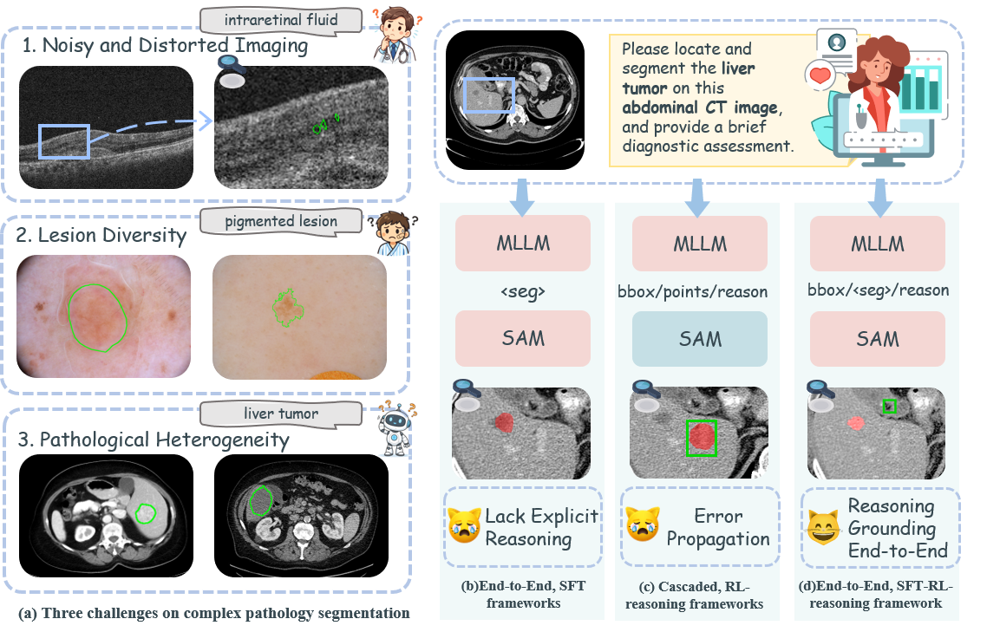

CORE-Seg: Reasoning-Driven Segmentation for Complex Lesions via Reinforcement Learning
1School of Computer Science and Engineering, Southeast University, Nanjing, China
2School of Computer Science and Engineering, Nanjing University of Science and Technology, Nanjing, China
3Zhongda Hospital, Southeast University, Nanjing, China
4Institute of High-Performance Computing, A*STAR, Singapore
∗Corresponding author: Yi Zhou (yizhou.szcn@gmail.com)
Abstract
Medical image segmentation is undergoing a paradigm shift from conventional visual pattern matching to cognitive reasoning-driven analysis. Although Multimodal Large Language Models (MLLMs) have shown promise in integrating linguistic and visual knowledge, significant gaps remain: existing general MLLMs possess broad common sense but lack the specialized visual reasoning required for complex lesions, whereas traditional segmentation models excel at pixel-level segmentation but lack logical interpretability. In this paper, we introduce ComLesion-14K, the first large-scale Chain-of-Thought (CoT) benchmark specifically curated to demand reasoning-driven understanding for complex lesion segmentation. To accomplish this task, we propose CORE-Seg, an end-to-end framework integrating reasoning with segmentation through a latent interaction mechanism. We design a progressive training strategy from SFT to GRPO, equipped with an adaptive dual-granularity reward mechanism to mitigate reward sparsity. Our method achieves state-of-the-art results with a mean Dice of 37.06% (14.89% higher than the second-best baseline), while reducing the failure rate to 18.42%, less than half that of general MLLMs.
Dataset
To address the lack of reasoning-oriented complex lesion segmentation data, we construct ComLesion-14K, the first large-scale Chain-of-Thought (CoT) driven multimodal benchmark for complex lesion segmentation, curated from 26 public authorized datasets with a three-stage construction pipeline. The dataset contains 13678 complex lesion samples covering 8 imaging modalities (MRI, CT, X-Ray, Ultrasound, OCT, etc.), 9 anatomical regions (Head, Abdomen, Lung, Eye, etc.) and 31 disease categories, focusing on clinical scenarios where traditional segmentation models fail.
The construction process includes: (1) Difficulty-Aware Filtering: Using U-Net to model segmentation error distribution (power-law function) and Kneedle algorithm to select hard samples with high morphological variability and low contrast; (2) CoT and VQA Generation: Constructing structured tuples (image, mask, query, reasoning, answer) via GPT-4o with a two-step prompting strategy, simulating clinician's diagnostic reasoning and stripping coordinate values to avoid shortcut learning; (3) Automated Quality Assurance: Using Qwen2.5VL-Max to score samples based on normal anatomy description, lesion characterization and reasoning logic (weighted 0.3:0.3:0.4), regenerating samples with scores below 0.8 to ensure quality.

Method
CORE-Seg is an end-to-end complex-lesion-centric reasoning segmentation framework that unifies the coherence of end-to-end models with the explicit reasoning of reinforcement learning, eliminating box-based error propagation and reward sparsity in traditional methods. The framework consists of three core components and a two-stage progressive training pipeline, with a custom adaptive dual-granularity reward mechanism for reinforcement learning optimization.
Core Components: (1) Multimodal Reasoning Module: Based on Qwen2.5-VL-3B, generates structured reasoning (/) and answer () with a special
Two-Stage Training: (1) CoT-Based Semantic Alignment (SFT): Applies LoRA to MLLM and fine-tunes the adapter/mask decoder with a composite loss (text cross-entropy + DiceCE) to align linguistic reasoning and visual localization; (2) RL-Based Reasoning Exploration (GRPO): Uses Group Relative Policy Optimization to enhance generalization, with a composite reward function (format reward + bipartite matching reward + dual-granularity mask reward) to guide policy update and refine segmentation boundaries.

Experiment
Extensive experiments are conducted on the ComLesion-14K dataset, with evaluations on in-distribution (ID) complex lesion segmentation and out-of-distribution (OOD) generalization (TNSCUI2020, ISPY, CVC-ClinicDB). We compare CORE-Seg with three categories of SOTA models: General MLLMs (Qwen2.5-VL-72B, InternVL3-8B), Medical-Specific MLLMs (HuatuoGPT-7B, MedGemma-4B) and Grounding-Specific MLLMs (SegZero-7B, LISA-3B), with evaluation metrics including mean Dice (mDice), mean IoU (mIoU) and Failure Rate (Dice=0 or invalid format).
Key Results: (1) CORE-Seg achieves SOTA performance with 37.06% mDice and 27.79% mIoU on ID data, outperforming the second-best LISA-3B by 14.89% in mDice, and reduces the failure rate to 18.42% (less than half of general MLLMs); (2) Superior cross-modality and cross-anatomy performance: Outperforms baselines in 6 of 9 anatomical regions, and achieves robust results on high-noise modalities (Ultrasound/OCT) and mainstream radiology modalities (MRI/CT); (3) Strong OOD generalization: Outperforms SFT-only baselines by ~10% mDice on OOD datasets, with 48.20% mDice on the most challenging CVC-ClinicDB; (4) Ablation studies verify the effectiveness of each module: Semantic-Guided Prompt Adapter is essential for cross-modal alignment, dual-granularity mask reward solves reward sparsity, and
Qualitative Comparison

BibTeX
@article{xie2026core,
title={CORE-Seg: Reasoning-Driven Segmentation for Complex Lesions via Reinforcement Learning},
author={Xie, Yuxin and Chen, Yuming and Yang, Yishan and Zhou, Yi and Zhou, Tao and Zhao, Zhen and Liu, Jiacheng and Fu, Huazhu},
journal={IEEE Transactions on Medical Imaging},
year={2026},
publisher={IEEE}
}
-->